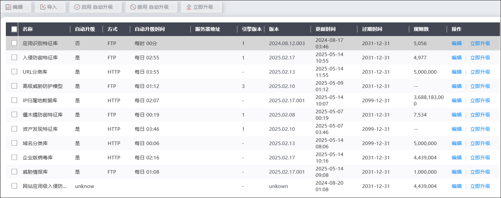
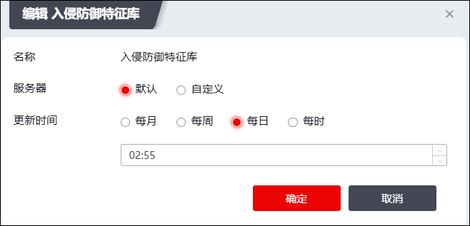
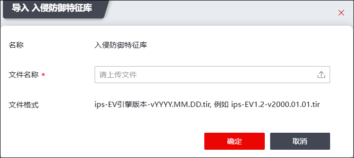

为了应对网络中入侵手段、病毒类型和应用类型日益复杂多变的情况，天融信应用识别、入侵防御、URL过滤、APT防御、僵木蠕防御、病毒防御等引擎都会比较频繁的更新规则库文件。在天融信更新规则库后，为了使NGFW能识别和抵御新出现的安全威胁或者提高安全检测的准确性和效率，需要及时升级NGFW设备中的规则库文件。
NGFW支持三种规则库升级方式（自动升级、立即升级和本地升级），管理员可以根据需要选择合适的升级方式。
l自动升级：支持管理员配置各类型规则库的自动升级策略，NGFW定时自动从天融信升级中心检查或者本地搭建的FTP/HTTP/HTTPS/SFTP/FTPS服务器获取规则库最新升级包，自动进行规则库升级。
l立即升级：管理员以手工方式触发NGFW立即从天融信升级中心或者本地搭建的FTP/HTTP/HTTPS/SFTP/FTPS服务器获取规则库最新升级包，立即进行规则库升级（立即升级与自动升级从相同的升级服务器获取规则库升级包）。当管理员发现网络上出现新的攻击方式、病毒或应用，升级中心已发布新的规则库，而此时未到设备的自动升级时间，可立即执行升级操作，及时升级规则库。
l本地升级：当NGFW与Internet物理隔离，且没有部署升级服务器时，可以采用本地升级方式。升级前将需要升级的规则文件保存到管理主机，再通过WebUI登录到NGFW设备，选择规则文件进行升级。
| 步骤1 | 选择 ，如下图所示。 |

| 步骤2 | 升级规则库 |
Ø自动升级
1）点击“编辑”，在弹出的“编辑”对话框中，配置规则库自动升级策略。

在配置规则库自动升级策略时，各项参数的具体说明如下表所示。
|
²配置规则库升级策略时，“服务器”参数选择“默认”，表示NGFW从天融信升级中心获取最新升级包进行规则库升级；“服务器”参数选择“自定义”，表示NGFW从自己部署的HTTP/FTP/HTTPS/SFTP/FTPS服务器中获取最新升级包进行规则库升级。如果“服务器”参数选择后者，需要在天融信发布新的规则库后，及时获取该最新发布的规则库并存放到HTTP/FTP/HTTPS/SFTP/FTPS服务器中，保证NGFW能及时升级天融信最新发布的规则库。 |

参数 |
说明 |
|---|---|
名称 |
显示自动更新规则库名称。 |
服务器 |
设置规则文件升级的服务器类型。可选项：默认和自定义。 |
方式 |
设置服务器为自定义时，该项可配置。设置自动更新方式。可选项：HTTP、HTTPS、FTP、SFTP和FTPS。 HTTP：从指定的URL地址下载规则文件。 HTTPS：从指定的URL地址下载规则文件。 FTP：从指定的FTP服务器地址下载规则文件。 SFTP：从指定的SFTP服务器地址下载规则文件。 FTPS：从指定的FTPS服务器地址下载规则文件。 |
名称 |
设置服务器为自定义且升级方式为FTP、SFTP和FTPS时需要配置该选项。输入FTP、SFTP和FTPS服务器的合法登录账号名称。 |
密码 |
设置服务器为自定义且升级方式为为FTP、SFTP和FTPS时需要配置该选项。输入FTP、SFTP和FTPS服务器的合法登录账号名称对应的密码。 |
更新时间 |
配置自动更新的时间间隔。可选择的更新间隔有：每月、每周、每日和每时。并可通过更新间隔下方的参数详细配置更新时间。 |
服务器地址 |
设置服务器为自定义时，该项为必填项。配置自动更新获取规则文件的服务器地址。 HTTP方式升级时，服务器地址为字符串类型，最大输入长度为64个字符，支持多个升级服务器地址，可点击右侧『＋』输入多个地址，最多支持5个服务器地址。格式为：域名形式或点分十进制形式X.X.X.X。 FTP方式升级时，字符串类型，最大输入长度为64个字符，支持多个服务器地址，可点击右侧『＋』输入多个地址，最多支持5个服务器地址。格式为：域名形式或点分十进制形式X.X.X.X。 HTTPS方式升级时，服务器地址为字符串类型，最大输入长度为64个字符，支持多个升级服务器地址，可点击右侧『＋』输入多个地址，最多支持5个服务器地址。格式为：域名形式或点分十进制形式X.X.X.X。 SFTP方式升级时，字符串类型，最大输入长度为64个字符，支持多个服务器地址，可点击右侧『＋』输入多个地址，最多支持5个服务器地址。格式为：域名形式或点分十进制形式X.X.X.X。 FTPS方式升级时，字符串类型，最大输入长度为64个字符，支持多个服务器地址，可点击右侧『＋』输入多个地址，最多支持5个服务器地址。格式为：域名形式或点分十进制形式X.X.X.X。 |
2）设置完成后，点击【确定】按钮，完成自动更新规则库策略配置。
|
²如果需要取消应用自动更新策略到规则文件，可选中需要禁用自动更新的规则库，点击“”即可禁用自动更新。 |

Ø立即升级
选择需立即升级的规则库，点击“”或点击需升级规则库“操作”列的“”完成规则文件升级。
Ø本地升级
1）勾选需本地升级的规则库，点击“”，弹出“导入”窗口。

点击“”按钮，选择管理主机上保存的规则文件。
2）配置完成后，点击【确定】按钮，完成规则文件升级。
| 步骤3 | （可选）禁用/启用规则库自动升级。 |
配置完成自动升级规则后，升级规则默认为启用，如果需要禁止自动更新规则库，可点击【禁用自动升级】，此时界面对应的规则文件所在行显示为深灰色。